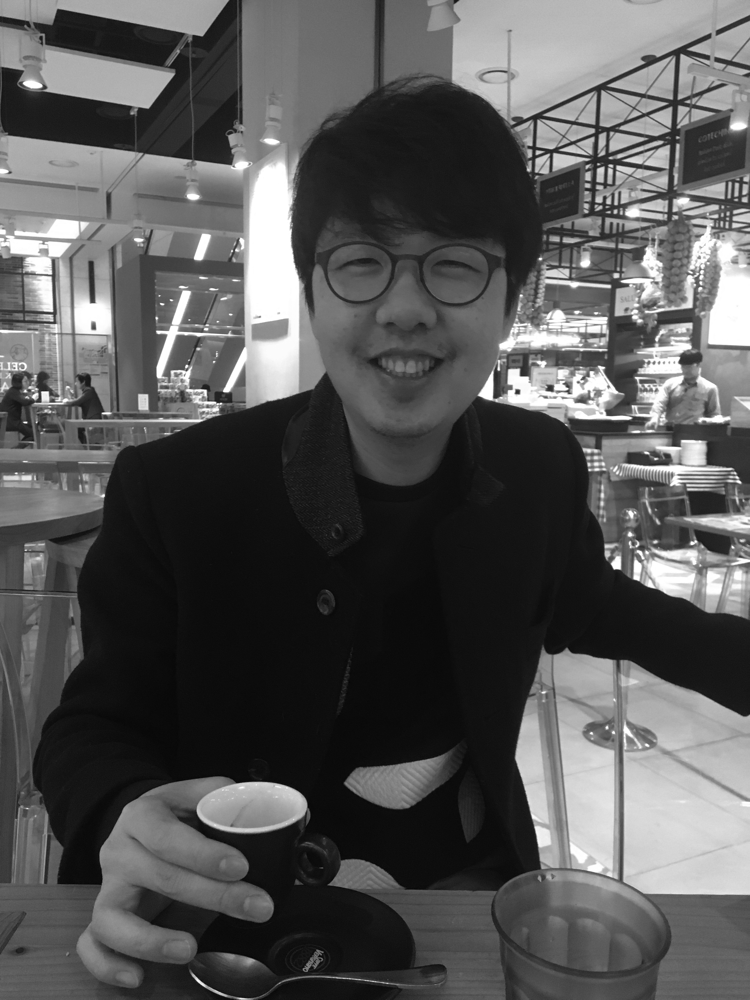

01
Know
About me
He is offering business consulting based on psychology; multi-sensory perception and human behavior. His lifelong interested fields are all kinds of culture and human senses. He has lots of experience living in different culture background as native country. He is also deeply interested in art field and children contents.He is also sort of synthesia. Based on it, his way of listening music, tasting food and beverage, seeing art, and smelling scents are developed.He is developing his skill and work that he can contribute for better humanity in future.
Scholar
- Master Degree of Urban design and regeneration from Hanyang University in South Korea (Master Degree Thesis : The sensory imagery impact on identity of place - Focusing on visual-auditory-olfactory sensory)
- Bachelor Degree of Landscape Architecture from Ohio State University in USA
Expertise
- Work : Business, Operation, and Marketing Consulting, Sensory Marketing Sensory Branding Sensory Design, Sound Branding, Soundscape Compose, Data Analysis
- Language : English, German, Japanese, Korean
- ICT and computer skill> : Adobe Illustrator, Photoshop, After Effect, Indesign, Autocad, Supercollider, Python
- Personal specialty : Synesthesia
- Strength Finder Result : Individualization, Strategic, Learner, Connectedness, Ideation, Responsibility, Relator
- Personal Interest : Neurology, Mankind, Psychology, Philosophy, Story, Culture, Art, Senses, Scent, Tasting

